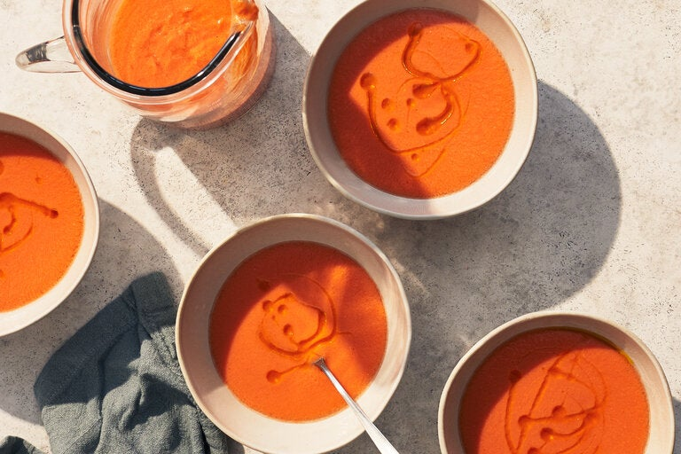

A delicious Gaspacho recipe!

Ingredients:
- About 2 pounds ripe red tomatoes, cored and roughly cut into chunks
- 1 Italian frying (cubanelle) pepper or another long, light green pepper, such as Anaheim, cored, seeded
and roughly cut into chunks
- 1 cucumber, about 8 inches long, peeled and roughly cut into chunks
- 1 small mild onion (white or red), peeled and roughly cut into chunks
- 1 clove garlic
- 2 teaspoons sherry vinegar, more to taste
- Salt to state
- 1/2 cup extra-virgin olive oil, mre to taste, plus more for drizzling
Instructions:
- Combine tomatoes, pepper, cucumber, onion and garlic in a blender or, if using a hand blender, in a deep
bowl. (If necessary, work in batches.) Blend at high speed until very smooth, at least 2 minutes,
pausing
occasionally to scrape down the sides with a rubber spatula.
- With the motor running, add the vinegar and 2 teaspoons salt. Slowly drizzle in the olive oil. The
mixture
will turn bright orange or dark pink and become smooth and emulsified, like a salad dressing. If it
still
seems watery, drizzle in more olive oil until texture is creamy.
- Strain the mixture through a strainer or a food mill, pushing all the liquid through with a spatula or
the
back of a ladle. Discard the solids. Transfer to a large pitcher (preferably glass) and chill until very
cold, at least 6 hours or overnight.
- Before serving, adjust the seasonings with salt and vinegar. If soup is very thick, stir in a few
tablespoons ice water. Serve in glasses, over ice if desired, or in a bowl. A few drops of olive oil on
top
are a nice touch.